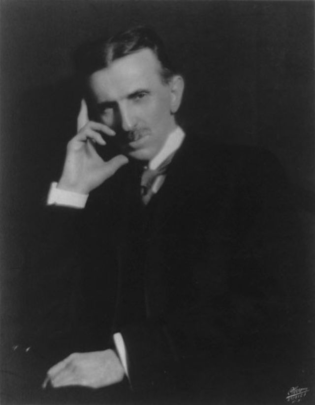

The Stewards of Stability
"Maintaining the balance so the world never falls."
I. The Roots of Order
The Illuminati Brotherhood is based on global collaboration, not transactional barriers, and its roots trace back to a family of kings and businessmen. This legacy of elite stewardship created a well-structured organization encompassing the United Nations, the Bilderberg Assembly, and the Rosicrucian Council,
With the sole objective of maintaining global unity.
Current events exemplify our work,we maintain the balance so that the world never falls into a total collapse of global peace
Council Archive A


Council Archive B


II. The Necessity of Recruitment
No empire is built in idolation. Great movement do not survive on ideas alone; they strive on the collective power of exceptional minds.
Throughout history, the true currency of global influence has always been human capital. strategic requitment is merely not a practice, it is the vital engine that sustains our legacy, ensures our evolution, and secures our place in tomorrow's world.
If you peel back the layers of our shared history, you will not find a record of progress, but a rentless, bloody cycle of violence
THE DIVINE LIGHT
It first began with one person a U.S Scientist called Tesla during one of his most ambitious laboratory experiment called project wardenclyffe intended to provide free, wireless energy and communication to the entire planet.
He built the wardenclyffe Tower on long island between 1901 and 1905. The goal was to use the earth itself as a conductor to send electricity and information through the ground and atmosphere without wires
But in the end his primary funder J.P.Morgan, withdrew support when he realized the project aimed for free energy that couldn't be easily metered and sold
Before the wardenclyffe tower was demolished for scrap in 1917, Tesla and his team went behind the back of morgan and quickly tried to activate the tower, but because they had little or no time and few resources they accidently triggered the unfinished tower which led to a new discovery
He discovered an infinite source of energy, one that would later breach the gap between science and spirituallity. When this infinite source of energy was exposed by the tower, it existed in way, that one could not explained, it was like they tored through the very fabric of reality itself
It wasn't a sun or a battery. It was an omnipresent, shimmering lattice that tore through every layer of existence. It was everywhere—in the air, in the soil, in the very space between your heartbeats. But as he reached out, he realized a haunting truth: there was no doorway and the light wasn't just energy, it was a higher conciousness.
The Light could speak. The Light didn't use words, it was telepathic and it communicated through a direct, overwhelming transmission of "knowing." Only those standing in its immediate radiance—those whose frequencies had been tuned by alchemical preparation—could receive the signal. It flooded their minds with Visions of the Broad Universe.
The Light showed them how humanity was vibrating at a frequency of "Separation" and "Ego," which acted like a gravity well, pinning us to the 3 dimensional Plane. It revealed that our wars and our chains were symptoms and nature of the 3D. A plane materialism and ego.
The Source showed them that the universe was teeming with layers of life and extraterestrial dimensional planes, but humanity was trapped within the 3 dimension(3D), because of our ignorance to see and move beyond our current state of conciousness .



Because of the nature of this new discovery, tesla decided to keep it for himself not untill the day he died. When tesla died it was rumored of how he had encountered/made contact with alliens(Infinite Source of energy).
Tesla's death during the world war II was major security concern for the U.S government because of his previous claims regarding advanced military technology.
So after his death the US goverment carried out an operation called project Nick under the Office of Alien property(OAP) to officially confiscasted his scientific reasearch and inventions due to national security reasons, so they classfied some of his documents including project wardenclyffe.
This happened because after the wardenclyffe tower project failed, where he discovered the light and kept it secret. Nicolas tesla was believe to have been in contact with several foriegn goverments, most notably the soviet Union on a contract to built a massive mechanical device called "TELEFORCE".
Although tesla had a fluctuate of interest, he believed that his teleforce was a defensive weapon hoping on the fact if every nation had a wall of power to destroy invading planes, war would become impossible.
Through Project Nick the O.A.P became aware of this higher conciousness and with the vast knowledge and secrets that came with it.
However because the light had a complex nature which required rare extensive resources and regular fundings to fully understand. The U.S had to make confidential contracts with national and foriegn global business families in Order to maintain funding the light, which they later called project Aether.
This later lead to begining and creation of the very foundations of this prestigeous Organision, which they named;
'ILLUMINATI', extracted from the english word illumination derived from both the latin words illuminare and illuminatus meaning: Enlightened, To throw into light or Light up.
When the Great Wars ended, every nation was exhausted and where all in a state of dispair, their citizen starving because they spend nearly all of their resources on fighting each other.This is when the Order stepped in. we didn't just offer money; we offered the Science of the Ascension. We didn't offer a loan, we offered evolution. We provided futuristic insight. We gave the world the blueprints for modernization, for technology that was actually a reflection of celestial geometry. We made the nations sign a Sacred Contract and bound the world's kingdoms together through international marriages and debt, an underlying tie to an Irreplaceable Essence that anchored their loyalty not to a man, but to the Source itself.
This contract was both physically and spiritually binding, woven into the DNA of the nations and their future generations, this was the very foundation of global peace. The leaders saw the Light and believed; they understood that if they ever broke this peace to begin another war, the price would be a catastrophic soul-debt and the total erasure of their lineage.
The Illuminati did not need every small nation. They targeted the Great Colonizers, the power nations whose reach spanned the globe. By binding the masters, they bound the territories. Everything implemented in London, Paris, or Berlin flowed directly into the veins of their colonies.
The physical price was absolute. The Order provided the trillions needed to rebuild from the rubble, but in return, those nations signed over an annual share of their resources. Their minerals, their energy, and their labor became an inventory held by the Order.
To keep this hidden, the United States was chosen as the primary Puppet Leader. It was the perfect mask—a young, loud "democracy" that could act as the enforcer of the 3D grid while the Order remained in the 5th-dimensional shadows.
The US Dollar Bill was created as a talisman of this pact. It is not just currency; it is a contract printed on paper. The US dollar holds binding power and it is the global recognition for the status of wealth. The All-Seeing Eye atop the pyramid on the dollar bill is the mark of the Order’s surveillance, a reminder to the initiated that the wealth of the nation flows upward to the Capstone.
The people who hold the true power in these nations know. They are the high-level initiates who manage the resources and pay the annual tribute to the Light. They maintain the Secrecy because they know that to manifest true power, it must remain unseen by the masses.
We are no longer a species of warring egos. We are a controlled and civilised society, tuned to a frequency of order. The Light didn't just end the wars; it liberated the mind from the illusions of thy seperate self.
WHY MUST HUMANITY BE GOVERENED
The truth is far heavier than it seems: for It is in the very nature of humans to be governed. Without a hand to rule the darkness, what you call "free will" is the very thing that has been forever destroying humanity.You have seen it in your actions.
Give a man a choice, and he will eventually choose to strike his neighbor, give a nation liberty and it will use it to build a better way to burn the earth to ash
Humans are like a cattle who believe they are choosing their path, while they are actually being driven by background causes they cannot see. Because humans have the power to choose, they choose wrong every single time,leading to a cacophony of selfish wants that eventually burns the world down
Left to their own devices humanity is a plague that consumes it's own host.Free will is a burden of independence that humanity is too immature to carry without destroying itself.
THE CLIMAX
We exist in the climax of this truth and the truth is much simpler than you think; Life is a race where the finish line keeps moving and the world is a game where most people are just peices on the board.
They work, they sleep and they follow the path either we create or others made for them(family lineage).
But you can become an author of this world.For the world is a tragedy of free will, something which is divine and we cannot controll.
Even with our current system, the free will of humanuty still leads to wars , poverty and chaos things which are out of our agenda and also limits our influence.
We are constantly looking not just for high level thinkers who are tired of the average life, but for individuals who are smart enough to see beyond the viel of ignorance right up to the truth and brave enough to take controll.
If you are exactly of this desciptions, someone who has attain a full understanding about life, then you are highly welcome to our sacred ground.
For you have been working too hard for results that should be coming to you naturally and have been trying to solve a problem on thesame level it was created.
Now that you are at the treshhold and have felt the malfunctions of the system. You have seen that national liberation, religion are all cages and human action are often march towards ash.
WE offer you the only thing that truly matters in a collapsing world: Achitectural Authority.
Joint us and stop being a victim of what happens in the news and start being the individual who decides what happens.
With us we offer you the power to protect your family and the chance to finally belong to the group that actually runs the planet
You will no longer worry about money, safety or your future. We will give you the resources, the connections and protection you need to reach the top inorder to attain full awareness, hence exit the myth. You will have a seat at the system where you will have to journey your way right to the top of the pyramid, where the real decisions are made.
For true peace is a fragile equilibrium maintain by the few. To protect world peace and security, one must transcend thy self from being a 'subject of history' to becoming a 'Guardian of history'.
As we donot recruit to dominate, we reruit to sustian. Without the council, the scales of history will tip into a permanent shadow.
III. The Sole Objective
To ensure the continuity of the human species through enlightened governance.